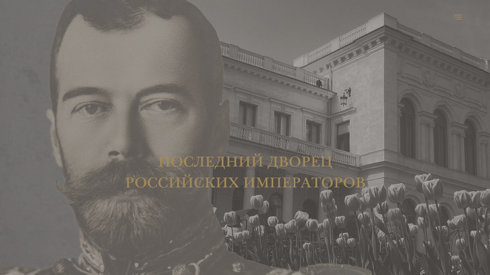

и
Университет «Синергия»
Итоговый проект по программе
«Вёрстка CSS и программирование на языке JavaScript»
© 2023
Я родился в Красноярском крае в тот год, когда Юрий Гагарин произнёс своё знаменитое «Поехали!». В 1976 году семья переехала в Крым, и с тех пор мне ни разу не довелось побывать на моей малой родине. Но всякий раз, когда я держу в руках десятирублёвую купюру, меня охватывает лёгкое волнение.
Высшее образование я получил в Ленинградском университете на факультете прикладной математики - процессов управления. После завершения учёбы приехал в подмосковный Жуковский, где и живу до сих пор.
Формат и цель проекта не предполагают более подробного рассказа обо мне, да это никому и не нужно. Гораздо важнее, на мой взгляд, рассказать о том,
Основами HTML и CSS на уровне, выражаясь образно, церковно-приходской школы я овладел более десяти лет назад. Мной был создан мебельный интернет-магазин на готовой платформе. Моя задача сводилась к поддержанию контента в необходимом для эффективной работы магазина состоянии и выполнению заказов. Иногда платформенная вёрстка нуждалась в ортопедическом вмешательстве. До поры, до времени проект давал результат. Но времена кустарей-одиночек закончились, и, как следствие этого, проект пришлось похоронить.
Тогда, освоив азы HTML и CSS, я планировал погрузиться и в JavaScript. Но, походив вокруг, да около и приглядевшись к теме внимательнее,
По крайней мере, в ближайшей перспективе.
Мысль всерьёз взяться за изучение JavaScript, а вместе с этим продвинуться во владении HTML и CSS, пришла ко мне спустя несколько лет. Я прошёл курсы по web-дизайну. Дизайнером так и не стал, да никогда им и не стану. Даже если абстрагироваться от моего возраста. Там нужны другие мозги, другой характер. Тем не менее, бесполезными для себя я их не считаю.
я радикально поменял свои представления о том, каким должен быть сайт. Сразу замечу, что родившаяся в моей голове концепция сайта уместна далеко не всегда и далеко не везде. Но я, собственно, и не стремлюсь объять необъятное. Да, строго говоря, и не я автор концепции. Сложившийся в моём сознании образ — это результат, что называется, «насмотренности».
Если коротко, то путешествие по сайту должно быть сродни чтению книги с одновременным просмотром её экранизации. Читая книгу, мы одну за другой перелистываем страницы, погружаясь в сюжет, а на экране всё описанное в книге превращается в зрительные динамические образы. Применительно к сайту это означает:
1. Размеры страницы должны совпадать с размерами окна браузера. Вертикальный скролл исключительно постраничный. Книга — не рулон туалетной бумаги.
2. На сайте непременно должна быть реализована анимация. Пусть в минимальном объёме, но должна!
Повторюсь. Такой подход уместен не всегда и не везде. Я не могу себе представить подобное, например, на «OZON» или «Wildberries», на «Госуслугах» или на «ЦИАНе».
Я подошёл к ответу на вопрос: зачем мне HTML, CSS и JavaScript?
На дизайнерских курсах слушатели выполняли практические
заадания — рисовали макеты сайтов
на вольную тему в Photoshop. Затем с помощью After Effects нужно было «оживить» макеты.
Таких проектов по программе было четыре. Два из четырёх, выполненных мной, я рискнул опубликовать
на странице «Немое кино». Один посвящён Ливадийскому
дворцу, другой автомобилю
Alfa Romeo Giulia Quadrifoglio.
Когда я продвинулся в After Effects, меня понесло. В проекте Ливадийский дворец всё пока ещё выглядит чинно. Но когда я взялся за Alfa Romeo, о приличиях я уже не задумывался. Плоды «насмотренности» созрели.
И если бы я принёс любой из двух проектов верстальщику, который находился бы в условиях, не позволяющих ему отказаться от выполнения задания, в тот самый момент
Но это ещё полбеды! Анимация с помощью After Effects — это как детская игра в войну. Не по-настоящему. А хочется же реализовать все свои фантазии в сети!
И тогда мне пришлось обратиться к платформе Tilda. Я изучил её вдоль и поперёк. Оказалось, Tilda мне не помощник. Плюс к тому, у сайтов, сделанных на Tilda, их происхождение буквально вырублено топором на лбу. Т.е., на первом экране. Хотя логотип их «мамы» размещен в «подвале». Одним словом, инкубатор. В стиле Hi Tech, но инкубатор
Ну вот и взялся я за HTML, CSS и JavaScript.
всё когда либо начатое надо доводить до логического завершения. И при этом стараться не заводить себе врагов. В том числе и среди верстальщиков.
А теперь обо всём, о том же, но уже серьёзно.
Существует мнение, что самым эффективным методом обучения человека плаванию является погружение его в водоём подальше от берега и плавсредств. Кому надо, до берега доберётся. Подход к процессу обучения, по крайней мере, по программе «CSS и программирование на языке JavaScript», реализованный в Университете «Синергия», если проводить аналогии с плаванием, на порядок радикальнее. Здесь речь идёт не просто о погружении, а о катапультировании ученика в воду с десятиметровой вышки. Без парашюта. И прежде,чем он начнёт грести к берегу или спасительному плавсредству, ему до той воды желательно добраться живым.
Программирование — предмет, который на 90% осваивается самостоятельно в процессе написания программ. Последовательно решая поставленные перед собой задачи, человек повышает свою квалификацию, кругозор и уровень владения предметом. Задача наставника — обозначить целеуказание, «нарисовать» пути развития, дать ссылки на соответствующие ресурсы и при необходимости помочь советом. В этом смысле к Университету никаких претензий. Напротив, я хочу персонально поблагодарить Луизу Владимировну, а также Эрика Александровича. С ним нашей группе, пусть и не долго, тоже довелось пообщаться.
Но!.. Для достижения значимых результатов необходимо время.
А что на практике? Запомните, дети: дважды два — четыре, делить на ноль нельзя, корень квадратный из отрицательного числа не извлекается, тангенс угла 90⁰… так, с этим пока подождите. А через месяц предъявите-ка вы нам расчёт траектории вывода на орбиту искусственного спутника Земли. Да! И в процессе вычислений вы должны выкроить время для регистрации в качестве ИП или самозанятого. Без этого вас не возьмут на работу в ЦУП! Примерно так.
Поняв, что за отведённое на обучение время мне не достичь уровня владения материалом, изложенным на лекциях (о дополнительном я даже не говорю), позволяющего мне выполнять практические задания действительно самостоятельно, я не стал выполнять два последних. Это попросту свелось бы к банальному переписыванию того, что мы получили на вебинаре. Я потратил бы время, нисколько не повысив при этом свою квалификацию. Вместо этого я направил все свои усилия на итоговый проект. Для меня это стало делом принципа. Плох он или хорош, судить не мне. Скажу лишь, что результат на 80% обеспечен нажитым ранее, и, соответсвенно, на 20% приобретённым в процессе обучения. Это, если на вскидку. И, к сожалению, я ещё не готов к использованию в своём проекте JavaScript.
Ну и чтобы не заканчивать на грустной ноте.
Я не зря прожил этот месяц. Если вернуться к обучению плаванию, то вместо полёта с вышки я не спеша спустился с неё по ступенькам к воде, не отказавшись по пути от спасжилета в виде конспектов и учебных видео-роликов, любезно предоставленных Университетом «Синергия», так же не спеша вошёл в воду… И теперь гребу.